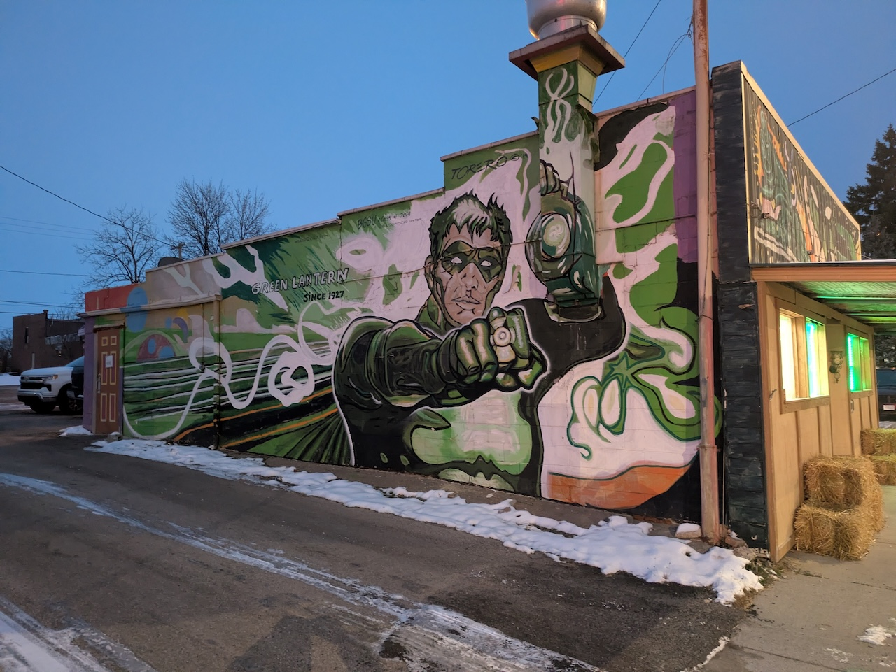
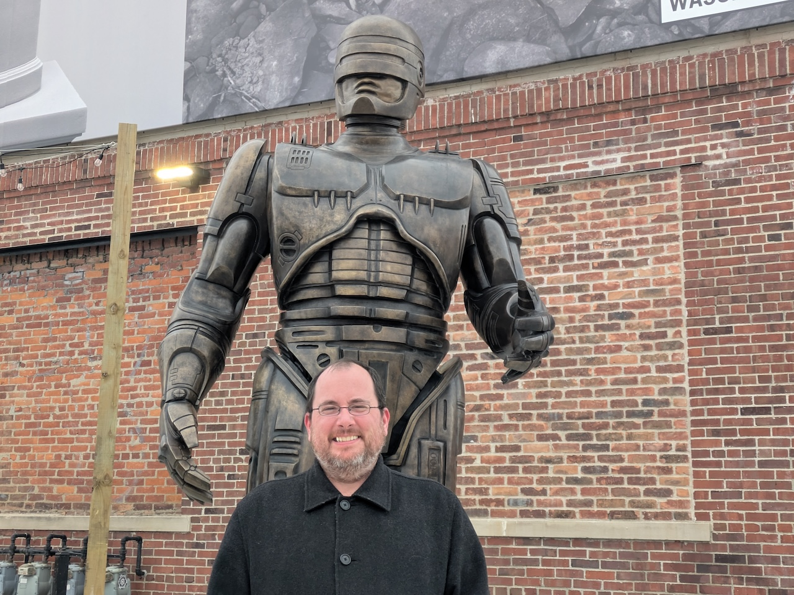

When I was growing up, my parents had season tickets to Central Michigan University football games. We tailgated in a small grassy area near Kelly/Shorts Stadium with other faculty. My education in football was on the big, grassy hill that used to mark the northern end of the stadium before the big expansion in the late 1990s. This was at the tail end of Herb Deromedi’s tenure as head coach. He didn’t really hold with the forward pass. I can still hear the announcer intone “Smith, the ball carrier, brought down by…” Mid-American Conference (MAC) football is in my blood.
The MAC created a championship game in 1997 when it split into divisions. It’s been played at Ford Field in Detroit (home of the Lions) since 2004. CMU made it there in 2006, 2007, 2009, and 2019, winning all but the last. Before 2024 I’d never gone to the game, but I’d always wanted to. When we lived in Kalamazoo it was just a few hours to the east. Now that I’m in the Lehigh Valley, it takes a bit more effort. Nevertheless, the itch didn’t go away.
I made my first trip to the game in December 2024, and had such a good time that I went back again in 2025. I took notes during the first trip but never got around to blogging about it. This post discusses both trips, and my ideas about a 2026 trip.
Outbound
The Toledo option is my key to getting to Detroit (and back): bus to New York, Lake Shore Limited from New York to Toledo, bus from Toledo to Detroit. Going back I take the bus from Detroit to Toledo, and then get on the Floridian (a temporarily renamed Capitol Limited). I can then either get off Pittsburgh, the Pennsylvanian from Pittsburgh to Philadelphia (which I did in 2024), or stay on the Floridian to Washington, DC, and take a connecting train up to Philadelphia (which I did in 2025). The bus from Toledo arrives in Detroit at 7:30 AM. The game kicks off at noon. The bus back to Toledo leaves Detroit at 9:30 PM. I have fourteen hours.
In 2024, I started early on Friday morning with the 6:35 AM Trans-Bridge Lines bus from Easton to New York. This alloeds me to put in a full workday from the pleasant confines of the Metropolitan Lounge at Penn Station before heading out on the Lake Shore Limited in the late afternoon. Amtrak now limits you to three hours in the lounge prior to departure, so in 2025 I took a half day off work and headed in a bit later.
I have time before leaving to do a little Christmas shopping–the IT’SUGAR candy store near Times Square, and Kinokuniya near Bryant Park. The latter is a true gem–it’s Japanese, and in addition to books and magazines it sells high-quality stationary and writing utensils. Although I didn’t go there on either trip, BOOKOFF over on 45th is an incredible used media store.
The Lake Shore Limited leaves New York on time at 3:40 PM. It’s my third outbound trip this year. I like to have dinner early, around 5 or 5:30, before we reach Albany. In Albany, the power is off for a while (and food service suspended) while we couple on to the Boston section for the trip west. After leaving Albany, I settle down to an evening of podcasts and development work before turning in somewhere west of Utica.
I made my peace with the Toledo option years ago. It’s the fastest way to reach Michigan on the ground, and the nature of the bus connection means there’s no danger of a missed transfer. That said, the arrival is early enough that there’s no coffee brewed yet on board the Lake Shore Limited; any such activity will have to await my arrival in Detroit.
Detroit
Detroit’s Amtrak station is located in the New Center neighborhood at the corner of West Baltimore Street and Woodward Avenue. It’s not far from Wayne State University, and about 2.5 miles from the downtown. It is also at the northern end of the QLine, a 3.3-mile streetcar line that runs up and down Woodward on a 15-minute headway. The line operates in mixed traffic and is probably more useful for tourists than commuters. Fortunately, I’m a tourist today.
The streetcar drops me off at Campus Martius Park and I walk over to the Cadillac Square Diner. I’m looking for a hearty breakfast and my first round of coffee, and the diner delivers on both counts. Compared to diners in the tri-state area the Greek influence predominates, and menus tend to be simpler. I’ve been to diners in New Jersey with larger menus than Jimbo Fisher’s playbook. This one’s a one-pager, front and back, and I get the Cadillac Square Omelet with hash browns. Passing up the grits was hard, but I really wanted potatoes.
In 2025, I had breakfast in Toledo, because a late-arriving eastbound Lake Shore Limited delayed our departure to Detroit. Two blocks from the Toledo station, on Broadway Street, is the improbably-named Green Lantern Lunch. The food is decent, the coffee, is hot, and they’re open at 6 AM on a Saturday.

There’s plenty to do in downtown Detroit besides the football game. You might visit the Eastern Market, an enormous open-air farmers market that’s open from 6 AM-4 PM on Saturdays, with additional Sunday hours in December. While there, you can get your picture taken with the Robocop statue, finally installed in 2025 after years of wrangling.

Or, you could walk down Lafayette street toward Corktown and visit John K. King Used & Rare Books. It’s in an old warehouse, and it bills itself the largest used book store in Michigan. It’s an incredible place, floor after floor packed with books, magazines, anything you might want.
After the game, I like to hang out at Dessert Oasis Coffee Roasters over on Griswold. Good coffee and atmosphere and free WiFi. Excellent location for a digital nomad (which I’m not exactly on these trips, but close enough). In 2025, I went to Z’s Villa for dinner. I cannot recommend Z’s highly enough. Great food, great atmosphere (it’s in a converted house), and it’s two blocks from the Amtrak station. Baobab Fare is also great but you definitely need reservations ahead of time.
Ford Field
I’ve been to Ford Field three times now: once for a Panthers-Lions game in 2011, and now twice for the MAC Championship. It’s a great atmosphere and the game draws well. This year we drew 19,000 fans, aided I’m sure by the presence of Western Michigan University.
In 2024 it was Miami (Ohio) vs Ohio. This year, Miami returned to face Western. Both games were fun, and both years Miami really struggled to do things on offense. The 2024 game got out of hand by the end of the first half. This time around, Miami had chances but just couldn’t get things going.
In 2024, I sat next to an Eastern fan from Ypsilanti who, like me, was just there for the fun of it. This year, an older man and his adult daughter who had driven over from Kalamazoo. I also saw a guy with a Maccoon sweatshirt (my Maccoon shit was hidden under a sweater).
Midnight in Toledo
It’s strange being back in Toledo the same day you arrived. It was dark when I got in and it’s dark as I’m leaving. Almost a liminal quality to it. The station itself is fine. It’s well-lit, there are bathrooms, places to sit, vending machines. Greyhound still stops here but withdrew its ticket agent years ago, so the Amtrak folks pull double-duty answering questions.
Relevant to 2025, there is a small (< 30") TV mounted on the ceiling. It’s tuned to the Big Ten Championship Game. As we arrive from Detroit that game is in the 4th quarter, and Ohio State is losing to Indiana 13-10, to the bemusement of those present. The Amtrak ticket agent, a proud Buckeye, grows increasingly horrified as the game winds on. I eventually reveal my Michigan fandom and she doesn’t quite threaten to throw me out of the station.
Eventually the Floridian arrives, and we depart Toledo. The scheduled departure is 11:49 PM. Leaving before the clock strikes midnight is a victory.
Pittsburgh
If everything’s on time it’s a five-hour trip from Toledo to Pittsburgh, with a two-and-a-half hour layover in Pittsburgh before the eastbound Pennsylvanian departs. What I want, and never get, is an on-time departure from Toledo and some delays in Ohio so I can get more sleep. Instead, it’s a little before five and I’m walking into the waiting room at Pittsburgh. It’s relatively spacious, the overhead fluorescents don’t buzz, there are bathrooms and vending machines. Because of my travel patterns I’m almost always here on a Sunday morning, and you don’t have many options in the wee hours of a Sunday morning in downtown Pittsburgh. I haven’t found a better solution than the Dukin’ on Grant. It opens at 6 AM.
Washington
In 2025, I stayed on until Washington, DC. This had several advantages. One, I could sleep a little longer. Two, breakfast and lunch served in the dining car. Three, beautiful scenery as we run along the Potomac River. Four, time to bum around DC if I feel like it (didn’t this time around). This does make a later arrival in Philadelphia: 5 PM vs 3 PM. The Martz bus to Allentown is still an option, though a little riskier. I can also take a SEPTA regional to Lansdale and beg for a lift back to the valley. The lack of good Philadelphia-Lehigh Valley connections is a real issue. Going all the way to New York to get Transbridge is an option but it really lengthens the day.
Next year
I’m planning on doing this again next year. One thing I really wanted to do this year, but didn’t have the time for, is to visit the restored Michigan Central station over in Corktown. I pass the Detroit Institute of Arts on the Q-Line; haven’t been since the Whistler exhibit. I also haven’t eaten in Greektown in over 20 years, when I was down for the Business Professionals of America state competition.